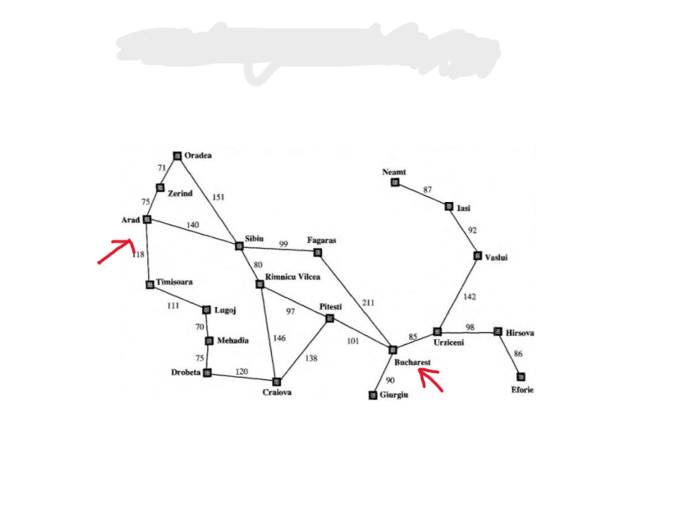
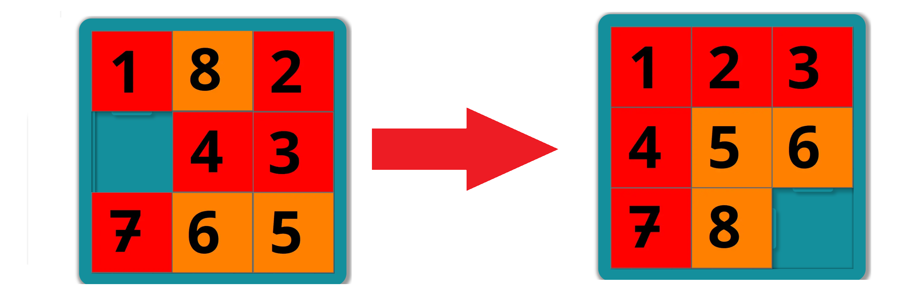
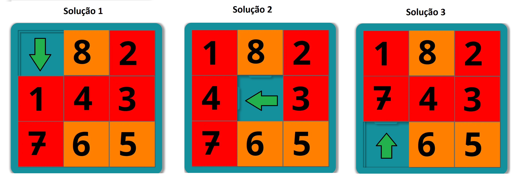
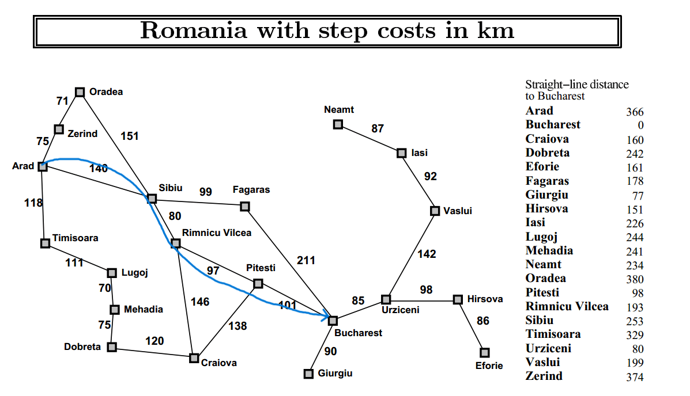
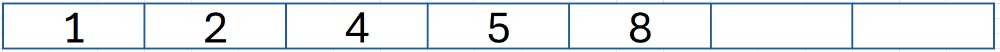
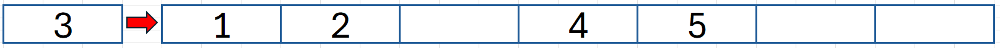
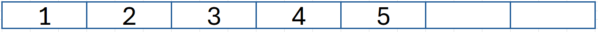
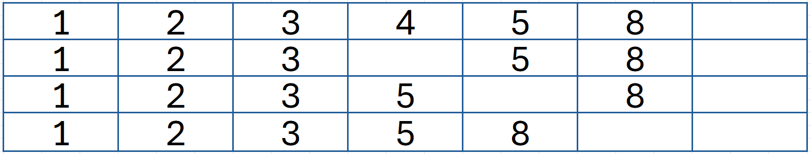

Aula 03
Aula 03
Considerações iniciais
Nesta aula apresentamos os conceitos sobre Algoritmos de Busca e exemplos de aplicação. Definição do problema: Dada uma chave de busca e uma coleção de elementos, ode cada elemento possui um identificador único, deseja-se encontrar o elemento da coleção que possui o identificador igual ao da chave de busca ou verificar que não existe nenhum elemento na coleção com a chave fornecida.
Algoritmos de busca
Componentes de um problema + Estado inicial (objetivo) + Espaço de estados + Ações para passar de um estado para outro + Solução (caminho que leva do estado INICIAL ao estado FINAL) + + Em projetos de IA esses passos serão importantes para a solução
Problema 1: ir de Arad até Bucharest

Considerações
Estado INICIAL: cidade de Arad Estado FINAL: cidade de Bucharest Espaço de estados: todos os caminhos possíveis (analisar todas as possibilidades) Ações para passar de um estado para outro Solução: encontrar o caminho mais adequado entre as cidades
Problema 2: jogo das peças (8 – puzzle)

Ações: movimento das peças Solução: a sequencia de movimentos que deve ser feita para chegar ao estado final

Algoritmos de busca
Neste exemplo existe a possibilidade de se contar a distância por estrada ou em linha reta como mostra a tabela

Podem ser utilizadas duas heurísticas, sendo uma pela estrada e outra por uma linha reta, para “dizer” ao algoritmo o quanto está perto do destino final
Heurística
Derivada da palavra grega “heuristiké”, a heurística é a capacidade de descobrir e inventar.
Assim, representa a forma como o ser humano simplifica o entendimento de questões complexas, seja porque precisa decidir a partir de informações incompletas ou porque se encontra em situações de incerteza.
Chamado também de “atalho mental”, ele ocorre de forma inconsciente e intuitiva, baseando-se em elementos como a experiência, o modo de pensar, a criatividade e a imaginação.
Longe de ser uma solução ideal, permite se alcançar um objetivo imediato, seja por meio de uma regra geral ou mesmo do bom senso.
Heurística - exemplos
- Escolher a melhor jogada no xadrez
- 170 setilhões de maneiras de se fazer os dez primeiros movimentos
- É superior ao número de elétrons no universo
- Assim a heurística apresenta maneiras para resolver um problema
- Indicam escolhas que a máquina deve priorizar
- Técnicas de ajuda a descoberta
- Exemplo: a técnica do quente ou frio
OBS: para utilizar algoritmos de busca no computador que não consegue processar numero grande de buscas e com isso será difícil testar todas as possibilidades dos estados, podemos então usar o conceito de heurística para reduzir esses espaços de busca e que indicam as escolhas que a máquina deve utilizar.
Calcular os movimentos das peças para chegar na posição final, contando de onde estão
Solução 1: 1 + 1 + 1 + 1 + 2 + 2 + 0 + 2 = 10
Solução 2: 0 + 1 + 1 + 0 + 2 + 2 + 0 + 2 = 8
Solução 3: 0 + 1 + 1 + 1 + 2 + 2 + 1 + 2 = 10
Assim sendo: a heurística está mostrando que a solução 2 pode ser a melhor, e ao invés do algoritmo testar todas as possibilidades possíveis, ela vi seguir para aquela que tem o menor custo
Vetores Ordenados
Os dados estão organizado em ordem ascendente de valores-chave, isto é, começa com o menor valor no índice 0 e cada célula a seguir mantém um valor maior do que a célula anterior.

- Como os valores estão ordenados, apresenta a VANTAGEM de agilizar os tempos de pesquisa
| Percorrer as posições do vetor para localizar a posição de inserção | |
| Deslocar para a direita a última célula do vetor | |
|  | Deslocar para a direita os próximos até abrir espaço para colocar o novo valor na posição correta |
|  | Inserir o valor na posição adequada do vetor |
Inserção
Algoritmo:
- Pesquisar uma média de N/2 elementos utilizando pesquisa linear
- Mover os elementos restantes N/2 passos
- Pior caso: N
- A pesquisa termina quando o primeiro item maior que o valor de pesquisa for alcançado
- No vetor ordenado, o algoritmo entende que não há necessidade de procurar mais
- Pior caso: se o elemento não estiver no vetor ou na última posição
Visualização online de um exemplo
Exclusão

Algoritmo para retirar o valor 4
- Pesquisa linear até localizar o valor
- Começa o remanejamento dos próximos valores para a esquerda e assim ocupar a posição de onde foi retirado o valor
Implementação em Python
Clique aqui para ser direcionado para o Colab.

Tarefas:
- Inserir valores no vetor
- Descobrir a posição onde inserir o novo elemento
- Realizar uma pesquisa linear para encontrar a posição onde inserir o novo elemento
Estudo de caso: mapa de cidades
Objetivo: criar uma estrutura de grafo para definir a melhor distância
Considerações
Definir uma classe com o nó do gráfico (VERTICE)
O atributo rótulo que define o nome das cidades
O visitado, que define as cidades visitadas
Armazenar as cidades adjacentes que inicia vazia
Criar a classe Adjacente e o custo entre elas
Criar a classe GRAFO que irá unir toda a estrutura das cidades como VERTICE
Construir as ligações entre as cidades adjacentes
Grafo - Busca gulosa
Clique aqui para acessar o código no Colab


Busca A* (A estrela)